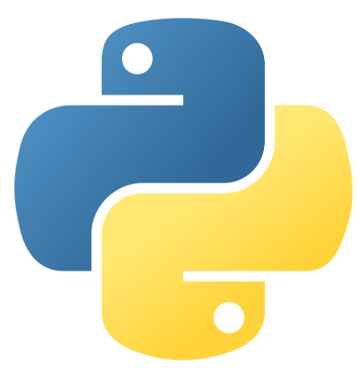
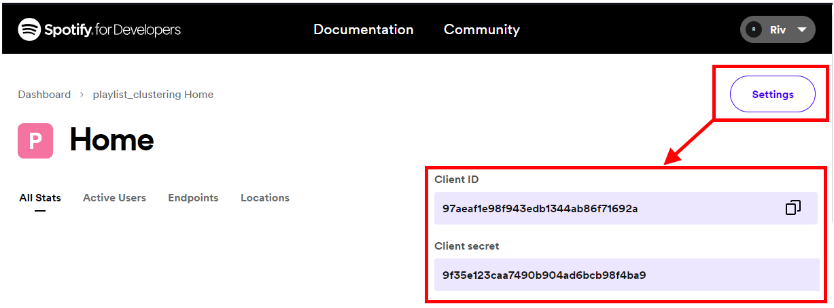
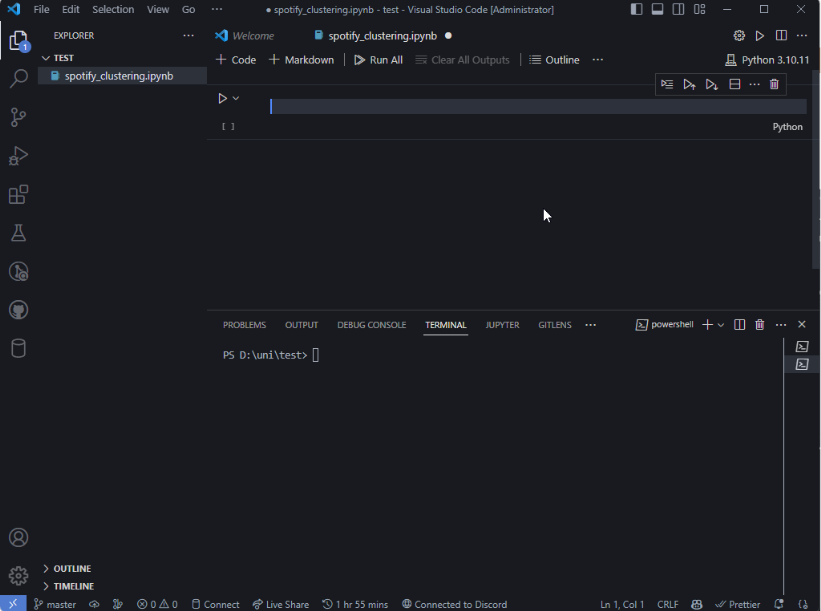

14 Project Clustering - Spotify Playlist Clustering
15 Project Overview
Project ini berfungsi untuk membuat sebuah aplikasi untuk melakukan proses clustering terhadap lagu-lagu yang ada di dalam sebuah playlist spotify.
Lagu-lagu tersebut dikelompokan berdasarkan karakteristik lagu (audio feature) yang kita dapatkan dari spotify web API.
Perlu diingat bahwa untuk project ini, kita akan buat algoritmanya dahulu, mengetesnya di notebook kita, lalu kita akan mengubahnya menjadi file python dan mengupload nya di Streamlit.
15.1 Spotify

Spotify adalah platform musik digital yang menyediakan layanan streaming musik dan podcast. Musik dan podcast di-stream melalui internet tanpa perlu mengunduhnya secara permanen. Pengguna dapat membuat playlist pribadi dan menyimpan lagu favorit di Library.
15.2 Python

Python adalah bahasa pemrograman serba guna yang dikembangkan pada awal 1990-an oleh Guido van Rossum. Tidak perlu mendeklarasikan tipe data variabel, dan nilai variabel dapat berubah saat program berjalan. Python mengutamakan kejelasan dan menghindari penggunaan tanda kurung kurawal atau titik koma. Python menyediakan pustaka bawaan (standard library) yang kaya, serta banyak modul dan pustaka dari pihak ketiga yang memperluas fungsionalitasnya.
15.3 Streamlit

Streamlit adalah framework open-source untuk mengembangkan aplikasi web interaktif dengan menggunakan bahasa pemrograman Python. Tujuannya adalah menyederhanakan proses pembuatan aplikasi web dengan memungkinkan pengembang untuk membuat aplikasi dengan mudah menggunakan kode Python yang sederhana dan familiar.
15.4 Clustering

Clustering adalah proses pengelompokan data atau objek-objek serupa menjadi kelompok-kelompok yang lebih homogen berdasarkan kesamaan fitur atau karakteristik tertentu.
15.5 K-Means
Algoritma k-means adalah metode clustering yang mengelompokkan data menjadi beberapa kelompok berdasarkan jaraknya ke pusat kelompok yang ditentukan secara iteratif.
16 Application Flow
User flow adalah interaksi antara user dan aplikasi ini harus kita pelajari dan petakan secara detail agar aplikasi bisa digunakan dengan user secara nyaman.
Data flow adalah alur dari data yang ada di dalam aplikasi.
Function flow adalah struktur dari fungsi yang ada di dalam aplikasi
16.1 User Flow
User flow dari aplikasi yang akan kita buat cukup simple :

16.2 Data Flow
16.3 Function Flow

17 Membuat Akun Spotify Developer
17.1 Daftar Sebagai Spotify Developer
Untuk mengakses web API spotify, kita harus mendaftar sebagai spotify developer. Berikut langkahnya:
- Pergi ke https://developer.spotify.com
- Klik tombol daftar di pojok kanan atas
- Isi form, klik daftar, verifikasi email
- Login dengan akun terverifikasi
- Pergi ke dashboard
Jika anda sudah bisa masuk dashboard, berarti anda sudah terdaftar menjadi developer spotify! Ikuti langkah-langkah selanjutnya.
17.2 Pergi ke dashboard spotify dan tekan create app
17.3 Isi form dengan data
App name, nama dari aplikasi, misal spotify_playlist_clusterization
App description, deskripsi singkat dari aplikasi yang akan dibuat
Website, website personal dari pembuat aplikasi
Redirect URI, umumnya user akan ditujukan ke URI ini ketika mengalami kegagalan request. namun untuk project ini, kita dapat mengisinya dengan apapun, seperti URL akun github atau linkedin
17.4 Klik app yang sudah dibuat
17.5 Pergi ke settings, cari ClientID dan ClientSecret

18 Buat Repositori di Github
Github adalah aplikasi untuk mengontrol versioning dari koding kita. Github akan melacak perubahan yang kita buat di dalam file koding, sehingga kita dapat membandingkan atau kembali ke versi sebelumnya. Dalam project ini, Github juga digunakan untuk proses deployment di Streamlit.
18.1 Login ke Github

Pergi ke Github.com dan login atau daftar akun baru. Jika anda membuat akun baru, jangan lupa verifikasi akun setelah dibuat. Jika anda sudah login, maka dashboard akun anda akan tampil seperti berikut:
18.2 Buat Repository Baru
Di side tab sebelah kiri dashboard anda klik tombol new untuk membuat sebuah repository baru. Repository adalah sebuah tempat untuk menyimpan code-code anda.
Isi kolom seperti contoh, nama dan deskripsi bebas. Pastikan bahwa repository bersifat public. Lalu klik create repository
18.3 Simpan Alamat Git (git remote)
Setelah membuat repositori, halaman ini akan muncul. Copy alamat git (https://github.com/rif42/githubtest0.git) dan simpan data ini
18.4 Open Folder di Code Editor

Buka code editor anda (contoh VScode atau IntelliJ), buka terminal, lalu open folder dan pilih sebuah folder.
18.5 Buat File Baru

Buat file baru, dan namai file nya spotify_clustering.ipynb. File ini adalah sebuah notebook, mirip seperti jupyter notebook. Format notebook sangat bagus untuk eksperimen koding. Setelah file dibuat, tidak perlu diisi apapun.
18.6 Push File ke Repository
Buka terminal dengan cara menekan (ctrl + shift + ) atau membuka terminal > new terminal di top bar vscode. Lalu ketik command berikut: -git add ., command ini berfungsi untuk menyimpan semua perubahan dalam file -git commit -m “first”, command ini berfungsi untuk menyimpan commit, sebuah langkah terakhir untuk menyimpan semua perubahan yang ada di dalam repository. Teks yang ada di dalam tanda petik adalah message atau deskripsi dari commit. -git remote add origin [url], URL disini adalah alamat git yang didapat di langkah 4c (https://github.com/rif42/githubtest0.git) -git push origin master`, mengirim semua commit ke repository secara final